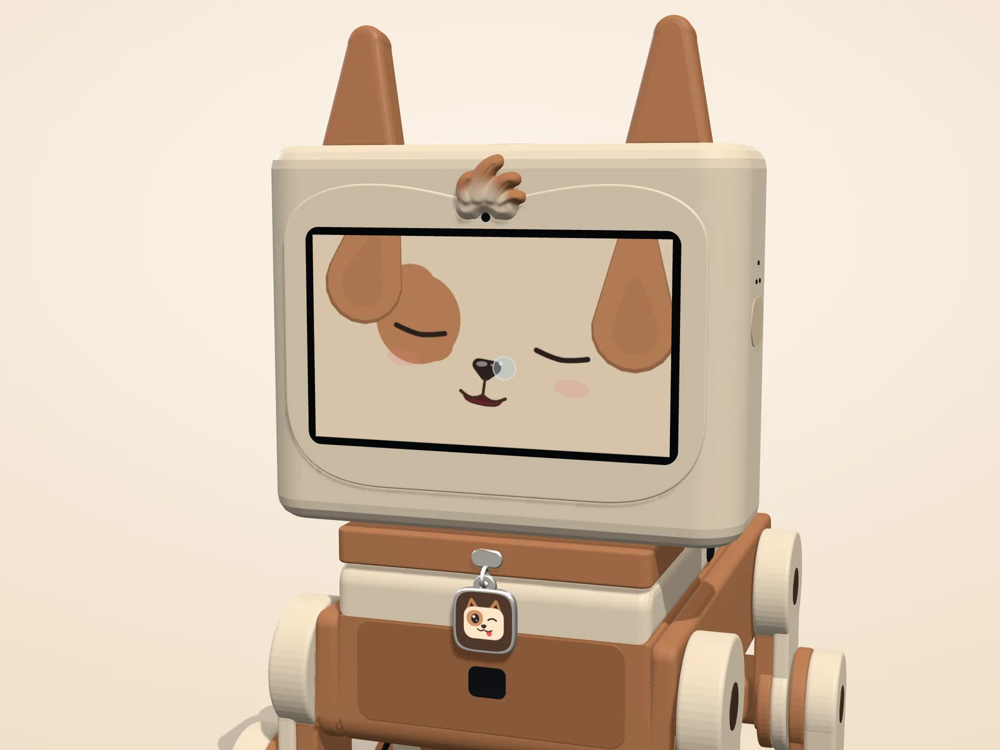
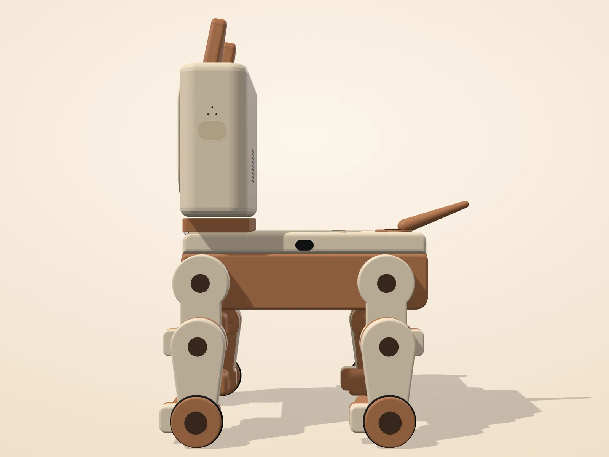
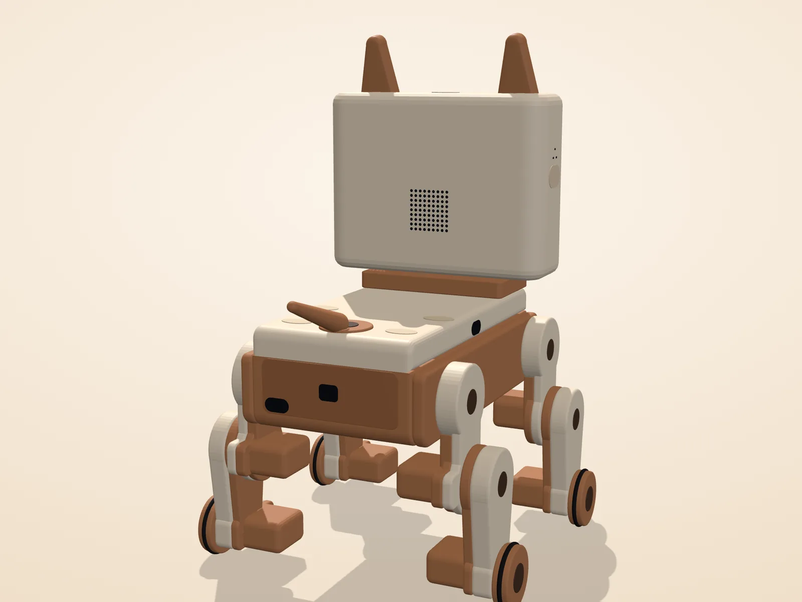
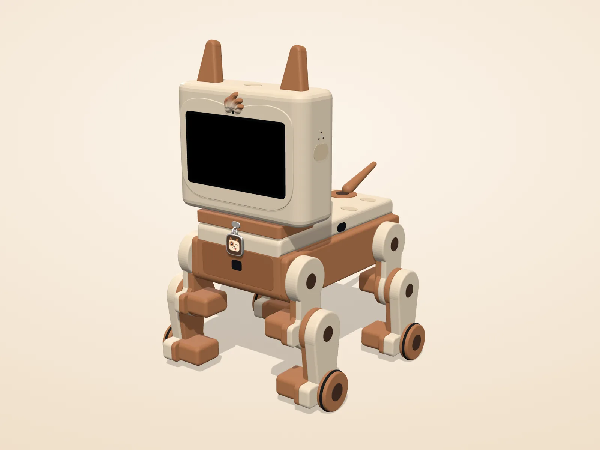
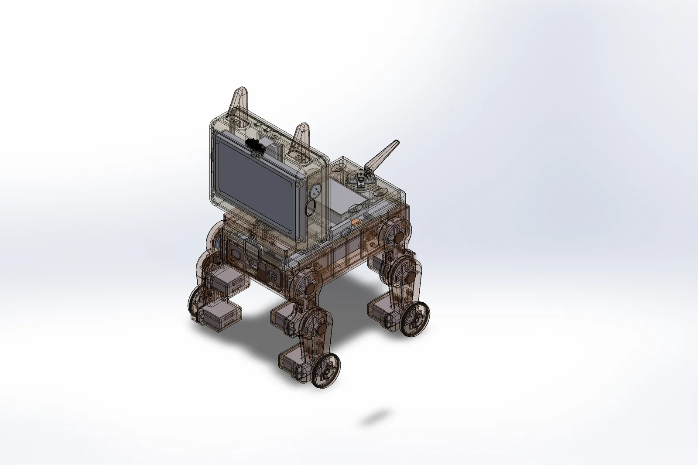
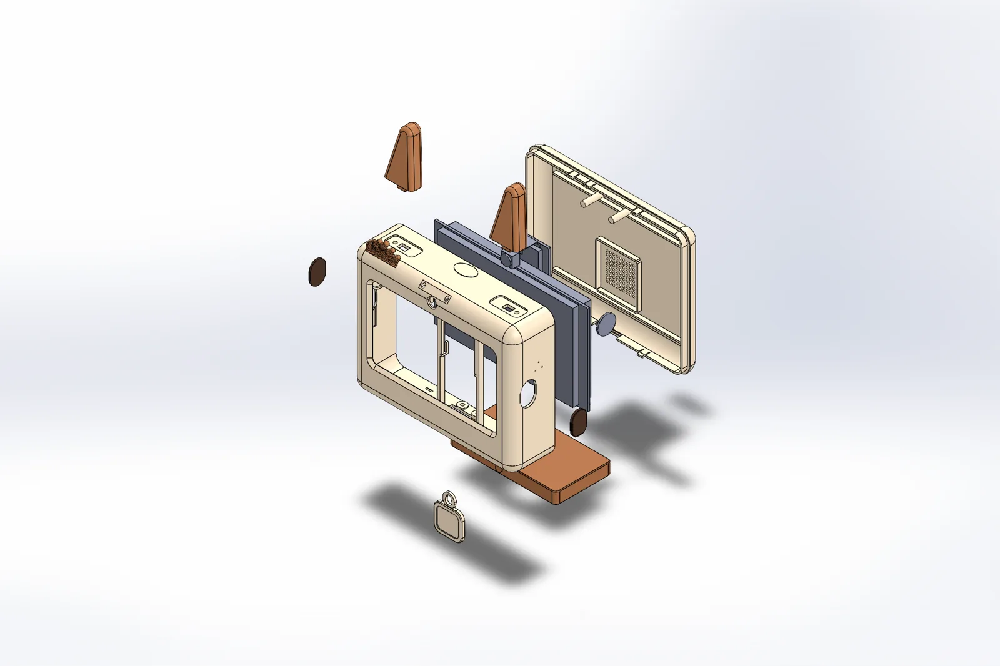
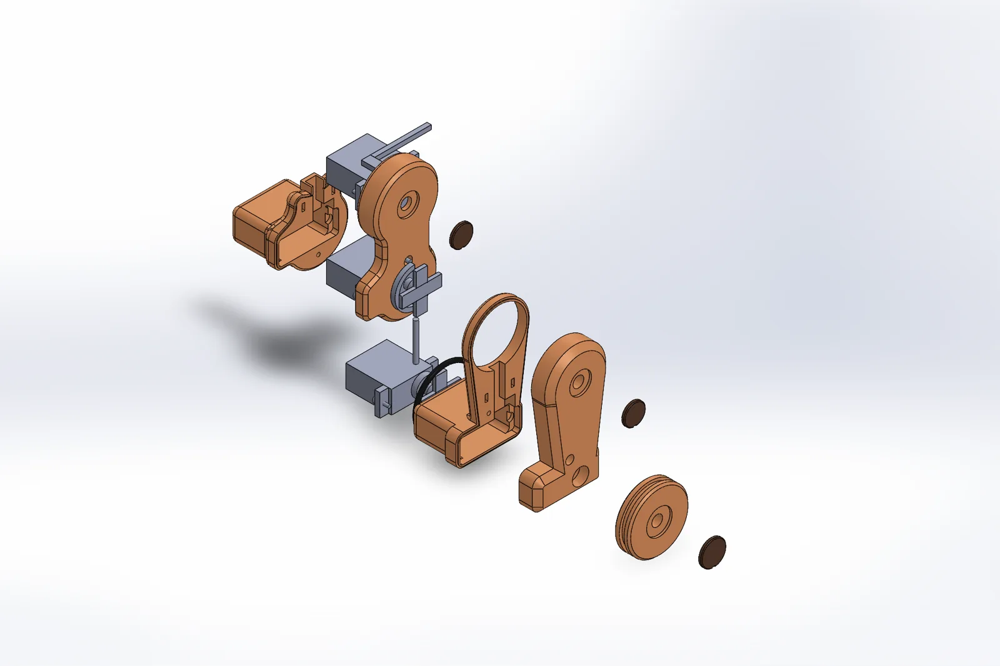
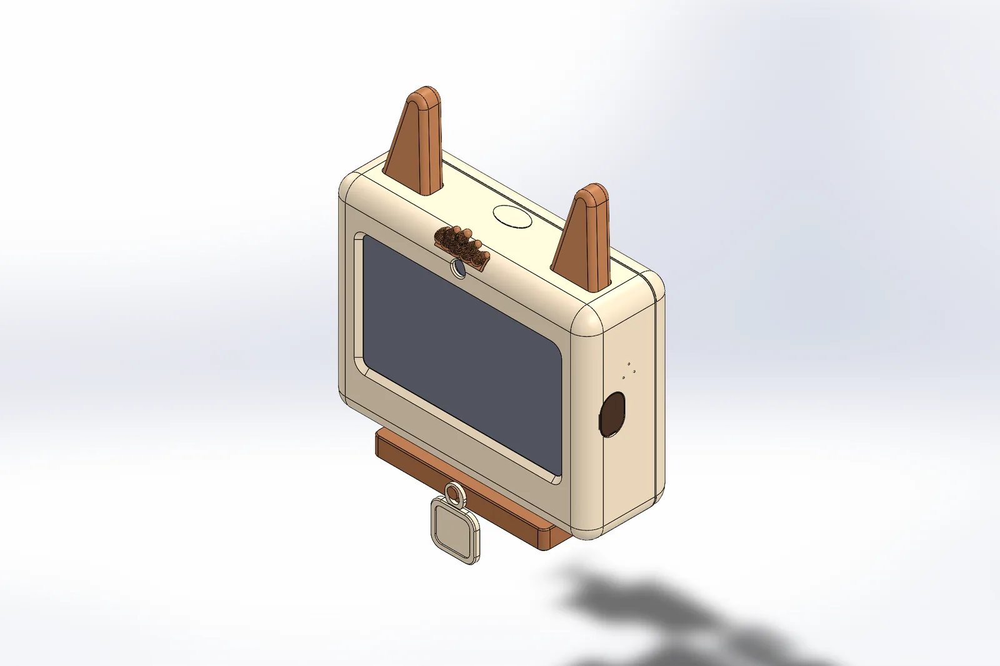

One face
Early versions had a physical muzzle under the screen, and that meant two faces. Now the screen draws his eyes, nose and mouth, and the head stays clean. With the screen dark, the ears, the tuft and the collar still say dog.
A small four-legged robot for your desk, about a kilogram, whose face is a 4.3-inch touch screen. Every motor, screw and wire is hidden inside a soft two-tone shell, so he looks like a finished product, not a kit.
Prototype, building now
Drag to turn, pinch or scroll to zoom. The 3D model is about 1.5 MB and loads only when you ask.
Early versions had a physical muzzle under the screen, and that meant two faces. Now the screen draws his eyes, nose and mouth, and the head stays clean. With the screen dark, the ears, the tuft and the collar still say dog.
His camera sits dead centre in his forehead, its lens tucked under a little caramel cowlick. It sees you face on, it never looks lopsided, and it gives him a signature you'd know anywhere.
Cream head, caramel ears and body, chocolate details, and a winking logo tag on his collar. Warm colours that look at home on a desk, printed in two colours with nothing mechanical on show.






Each leg has a hip, a knee and a wheel for a paw, so he drives where most small robots stumble. This list is checked against his real motors and balance; the apps never offer anything else.
Time-of-flight sensors watch the desk edge and stop him before he gets there. Those stops live in his firmware and are always on.
Every printed part is generated by Python scripts that drive SolidWorks, then checked: size, fit on the print bed, clearances, the load on each motor and how stable he stands. Version 3.2 has 56 printed parts and no clashes.




The design being built now. Numbers may change as the prototype is tested.
Body v3.2 modelled and checked.
Both boards: face, body control, gait and sensors.
Gathering the electronics and printing the first full shell.
Putting the first Spike together.
Tuning the walk and give paw on the real body.